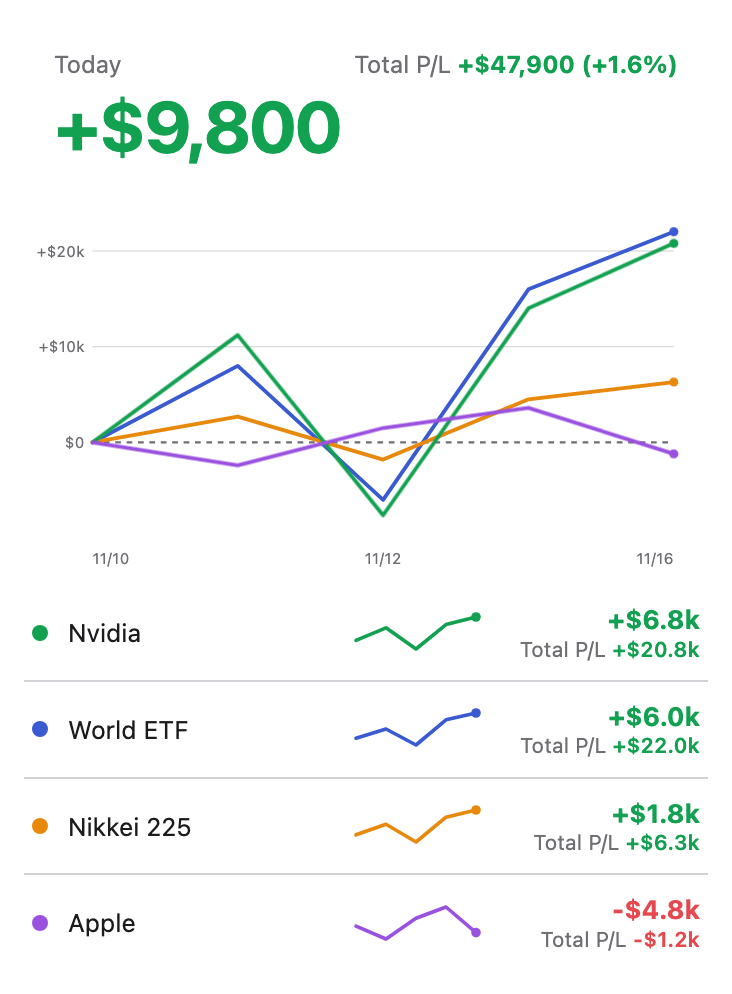

Your Muse chats,now with widgets.
Weather, transit directions, charts, quizzes and more: 21 widgets.
Widgets that run right inside Muse’s chat bubbles.
Install with a single prompt!
Register the widgets from miwidgets.com/register.txt
- Copy the prompt
- Paste it into a Muse chat and send
- Then just ask, “Show tomorrow’s weather in London as a widget”
- Free
- Open source (MIT)
- Source on GitHub
22°
Sunny Tue, Nov 17
H 25° / L 14°Rain 10%
Every 6 hours

ShinjukuTrack 3Board here next
JR Chuo Line Rapid14 min
Tokyo
Transfer · 9 min walk + 9 min wait · To the Shinkansen gates
TokyoTrack 14
Tokaido Shinkansen Nozomi 2012h 14m · Reserved, Car 8
Kyoto
Transfer · 7 min walk + 5 min wait · To the subway
KyotoTrack 1
Karasuma Line23 min
Kokusaikaikan
One small addition to every conversation.
Just send “Register the widgets from miwidgets.com/register.txt”.